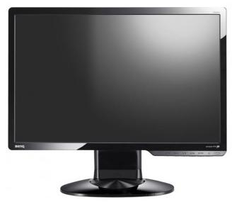
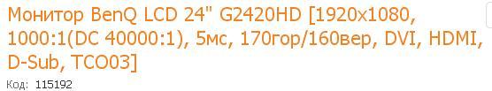

|   | ||
|
•Первый °один-один °один-два °один-три •Второй °два-один °два-два °два-три |
Уровень динамической контрастности монитора G2420HD равен 40000:1. Применяемая технология автоматически подстраивать подсветку для оптимизации освещенности в каждой отдельной сцене. Высокий уровень констрастности позволяет передавать темные объекты с большей четкостью и детализацией, открывая тем самым новые грани Ваших любимых фильмов и компьютерных игр. Мониторы BenQ серии "G" обладают временем отклика 2мс (g to g), 5мс (on/off) что обеспечивает комфортную работу в любом приложении. Столь малое время отклика позвляет просматривать даже самое динамичное видео без искажения и размытости изображения. Смотрите любимые фильмы на Blu-ray проигрываетеле, играйте в игры на PS3 или редактируйте фотографии, снятые с помощью HD-фотокамер. С Full HD монитором BenQ G2420HD делать все это стало легко и просто. |
Теорема Пифагора Z2=X2+Y2 |
|
Горячий привет |
||